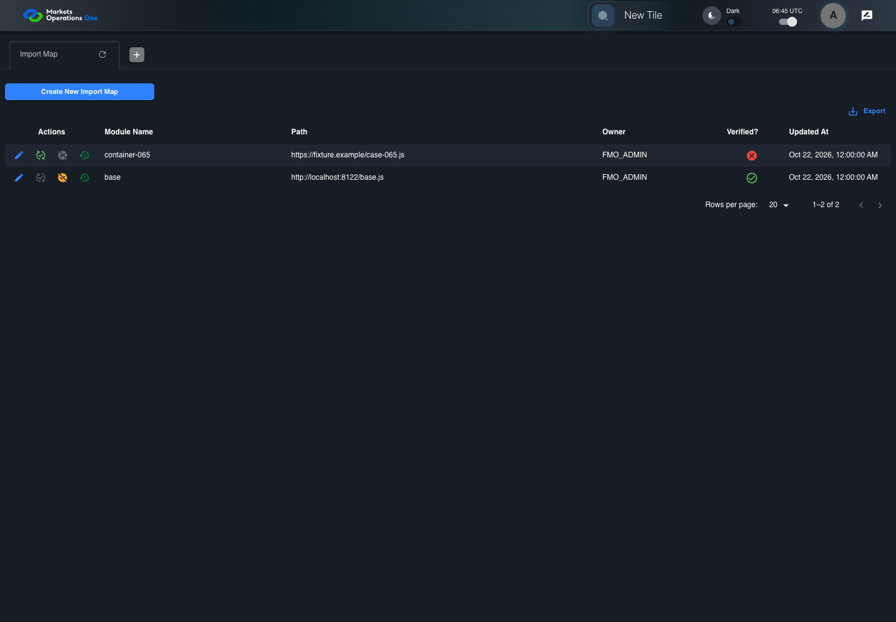
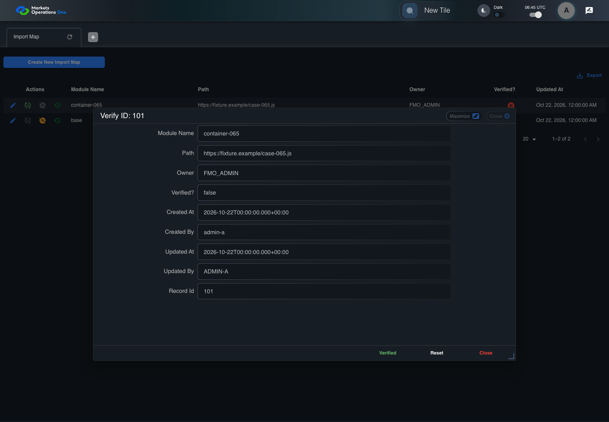
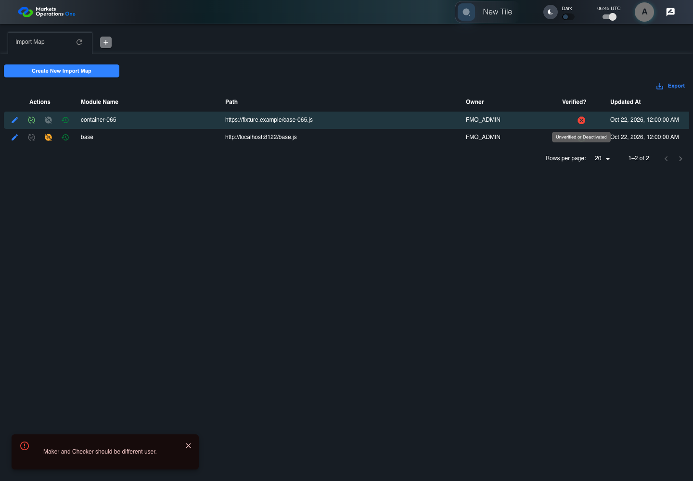
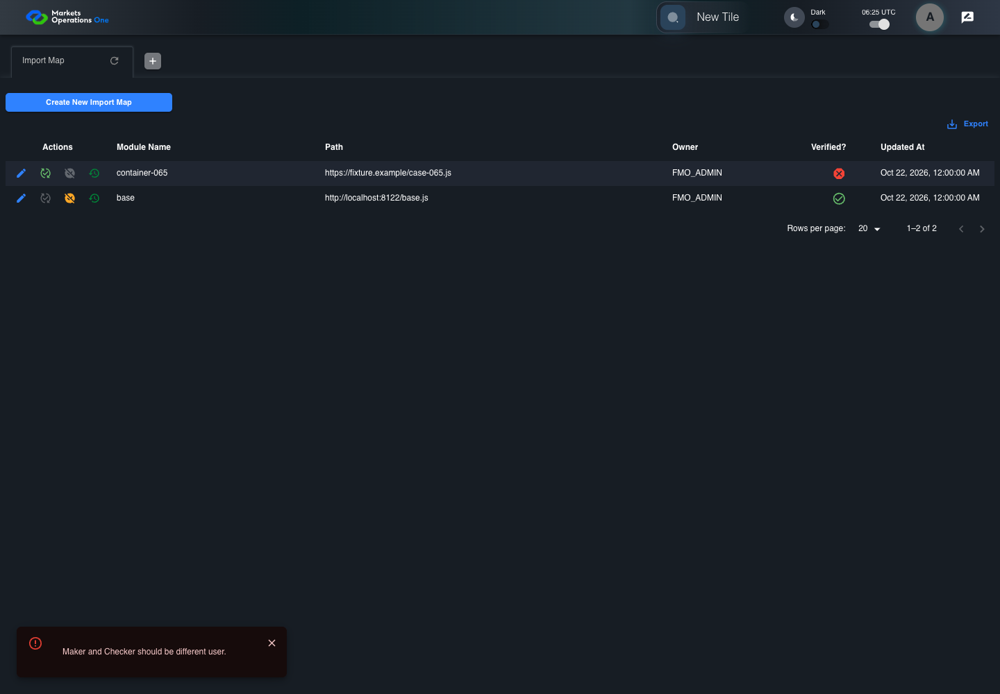
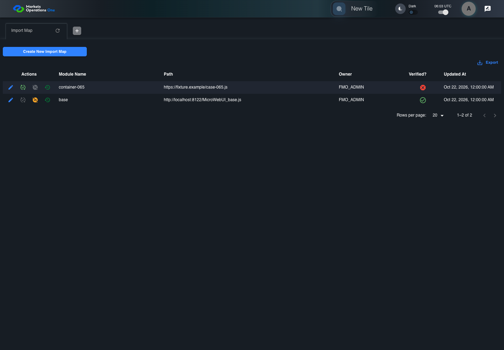
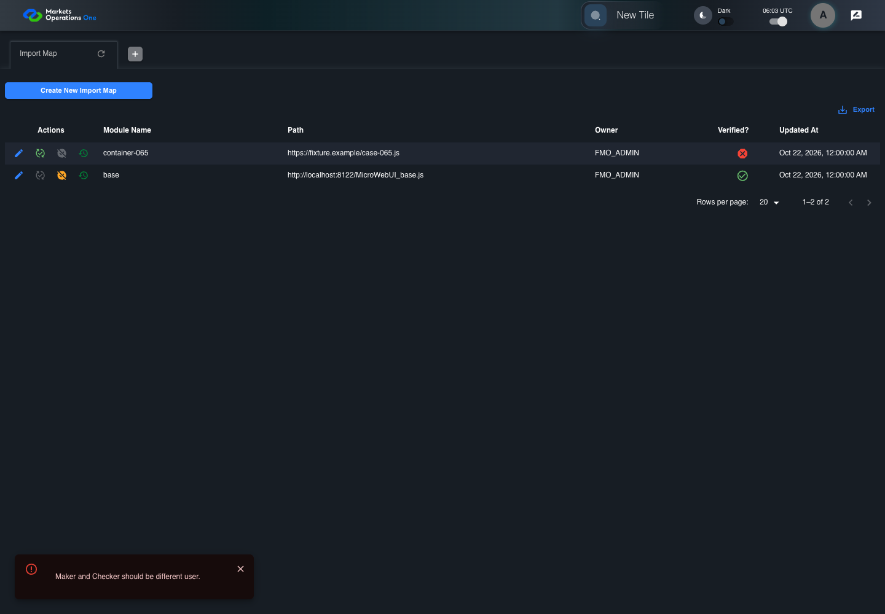
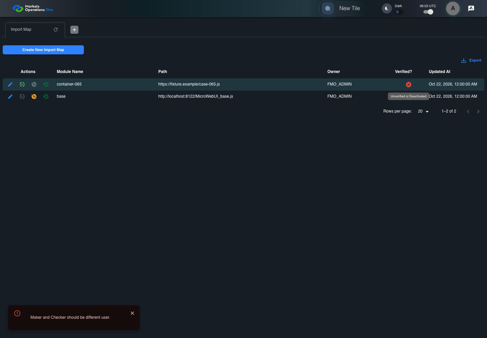

All canonical cases
BFF-ADM-065: Reject case-only self-verification of Import Map Business acceptance remains unverified. Owner: unknown. Review the canonical definition and fixture limits before acceptance.
Latest local result: PASS Business acceptance: NOT_ESTABLISHED.
The latest local result describes execution. The historical definition review assesses the case design before execution.
Latest step screenshot bindings: COMPLETE . 13/13 canonical steps have execution screenshots.
Bindings measure structural coverage only. They do not establish screenshot content quality or relevance.
Screenshot content review: NOT_REVIEWED . Recorded context does not establish human visual review.
Canonical Gherkin definition . Definition version: 2. SHA-256: 6bd6026734e825415061bd6d06d37e479debddf0a979d1ac005dd9204be723ad.
Historical definition review (preflight): UNVERIFIED A definition review FAIL can coexist with local PASS. The definition failed preflight quality checks.
This historical review does not change the latest execution result. Resolve definition gaps before business acceptance.
Canonical Gherkin steps Feature: Admin authority
@BFF-ADM-065
Scenario: Reject case-only self-verification of Import Map
Given Admin A uses subject "admin-a" with role "FMO_ADMIN" in an isolated authenticated browser
And the controlled Import Map fixture records the initial grid rows and persisted values
And the Import Map grid has record "101" owned by "FMO_ADMIN"
And the baseline fixture data defines "Module Name" as "container-065"
And the baseline fixture data defines "Path" as "https://fixture.example/case-065.js"
And Import Map record "101" is inactive when this browser loads its grid
And its stored "updatedBy" value is "ADMIN-A"
When Admin A clicks the button labeled "Verify" in the Import Map grid row with "Record Id" "101"
Then the dialog titled "verify ID: 101" is visible on the Import Map administration page
When Admin A clicks the button labeled "Verified" in dialog "verify ID: 101"
Then the alert with severity "error" in the portal snackbar contains the exact text "Maker and Checker should be different user."
And in the Import Map data grid with column "Record Id", the "Verified?" cell for Import Map record "101" has status tooltip "Unverified or Deactivated" on the Import Map administration page
And the persisted-record readback for record "101" has "active" equal to false Acceptance and evidence limits: NO_COMPLETE_REAL_APPLICATION_BINDING, CANONICAL_REVIEW_OR_EVIDENCE_UNRESOLVED.
Planned essential canonical frames: 3. Plan completeness requires separate review.
Latest attempt BFF-ADM-065 current BFF administration through actual UI PASS · application/run-072/bff-adm-065-current-bff-administration-through-actual-ui-35fd6c69abd2-attempt-1 · ACTUAL_APPLICATION_LOCAL_SERVICES
Actual current React and exact-current BFF admin controllers/services/JPA with actual migration DDL in disposable PostgreSQL. Controlled OUD/EMS2 identities and local Spring bootstrap. Fixture SQL seeds/mutates isolated records; service errors are actual database errors. Undefined agreed messages remain unresolved acceptance.
2026-10-22T06:45:46.232Z to 2026-10-22T06:45:52.000Z
Assertions and result · Artifact manifest · Exact run inputs and source hashes
Result SHA-256: e0f8848be1e40aca1ec90f81401ad8901a9a3d63861857a15a9db32a60769812 Playwright trace
Machine observations Screenshot capture: CAPTURED. Named frames: 14.
Step screenshot bindings: COMPLETE. 13/13 canonical steps have execution screenshots.
Bindings measure structural coverage only. They do not establish screenshot content quality or relevance.
Screenshot content review: NOT_REVIEWED . Recorded context: 0/14 frames. Identical image bytes: 9 repeated frames. Recorded context does not establish human visual review.
Canonical step timeline Given Admin A uses subject "admin-a" with role "FMO_ADMIN" in an isolated authenticated browser

1. step-01 Visible state after step 1: Given Admin A uses subject "admin-a" with role "FMO_ADMIN" in an isolated authenticated browser
2026-10-22T06:45:49.763Z · 1440×1000d0696e07a517ee25d8c2542902c9fc6b2a0099176fb23faed6d3d22ad4e5a7dd And the controlled Import Map fixture records the initial grid rows and persisted values
2. step-02 Visible state after step 2: And the controlled Import Map fixture records the initial grid rows and persisted values
2026-10-22T06:45:50.022Z · 1440×1000d0696e07a517ee25d8c2542902c9fc6b2a0099176fb23faed6d3d22ad4e5a7dd Image bytes match frame 1. An unchanged image can be valid for consecutive assertions. This match does not establish correct step content.
And the Import Map grid has record "101" owned by "FMO_ADMIN"
3. step-03 Visible state after step 3: And the Import Map grid has record "101" owned by "FMO_ADMIN"
2026-10-22T06:45:50.131Z · 1440×1000d0696e07a517ee25d8c2542902c9fc6b2a0099176fb23faed6d3d22ad4e5a7dd Image bytes match frame 2. An unchanged image can be valid for consecutive assertions. This match does not establish correct step content.
And the baseline fixture data defines "Module Name" as "container-065"
4. step-04 Visible state after step 4: And the baseline fixture data defines "Module Name" as "container-065"
2026-10-22T06:45:50.206Z · 1440×1000d0696e07a517ee25d8c2542902c9fc6b2a0099176fb23faed6d3d22ad4e5a7dd Image bytes match frame 3. An unchanged image can be valid for consecutive assertions. This match does not establish correct step content.
And the baseline fixture data defines "Path" as "https://fixture.example/case-065.js"
5. step-05 Visible state after step 5: And the baseline fixture data defines "Path" as "https://fixture.example/case-065.js"
2026-10-22T06:45:50.290Z · 1440×1000d0696e07a517ee25d8c2542902c9fc6b2a0099176fb23faed6d3d22ad4e5a7dd Image bytes match frame 4. An unchanged image can be valid for consecutive assertions. This match does not establish correct step content.
And Import Map record "101" is inactive when this browser loads its grid
6. step-06 Visible state after step 6: And Import Map record "101" is inactive when this browser loads its grid
2026-10-22T06:45:50.375Z · 1440×1000d0696e07a517ee25d8c2542902c9fc6b2a0099176fb23faed6d3d22ad4e5a7dd Image bytes match frame 5. An unchanged image can be valid for consecutive assertions. This match does not establish correct step content.
And its stored "updatedBy" value is "ADMIN-A"
7. step-07 Visible state after step 7: And its stored "updatedBy" value is "ADMIN-A"
2026-10-22T06:45:50.433Z · 1440×1000d0696e07a517ee25d8c2542902c9fc6b2a0099176fb23faed6d3d22ad4e5a7dd Image bytes match frame 6. An unchanged image can be valid for consecutive assertions. This match does not establish correct step content.
When Admin A clicks the button labeled "Verify" in the Import Map grid row with "Record Id" "101"
8. step-08 Visible state after step 8: When Admin A clicks the button labeled "Verify" in the Import Map grid row with "Record Id" "101"
2026-10-22T06:45:50.745Z · 1440×1000b0b9801123f0de97cfecc4b87cf473dc6bfaff24c5b5f1feba703341f9c24b5d Then the dialog titled "verify ID: 101" is visible on the Import Map administration page

9. step-09 Visible state after step 9: Then the dialog titled "verify ID: 101" is visible on the Import Map administration page
2026-10-22T06:45:50.820Z · 1440×1000e4ab55ac780267737f7aada3572d1a1d323f3b06140e081d52f1331633a496a2 When Admin A clicks the button labeled "Verified" in dialog "verify ID: 101"
10. step-10 Visible state after step 10: When Admin A clicks the button labeled "Verified" in dialog "verify ID: 101"
2026-10-22T06:45:51.081Z · 1440×1000ee36cc797897a20d4c7228b2bdb644d85083a5c2616a253cfa932853b51dec86 Then the alert with severity "error" in the portal snackbar contains the exact text "Maker and Checker should be different user."
11. step-11 Visible state after step 11: Then the alert with severity "error" in the portal snackbar contains the exact text "Maker and Checker should be different user."
2026-10-22T06:45:51.150Z · 1440×1000ee36cc797897a20d4c7228b2bdb644d85083a5c2616a253cfa932853b51dec86 Image bytes match frame 10. An unchanged image can be valid for consecutive assertions. This match does not establish correct step content.
And in the Import Map data grid with column "Record Id", the "Verified?" cell for Import Map record "101" has status tooltip "Unverified or Deactivated" on the Import Map administration page

12. step-12 Visible state after step 12: And in the Import Map data grid with column "Record Id", the "Verified?" cell for Import Map record "101" has status tooltip "Unverified or Deactivated" on the Import Map administration page
2026-10-22T06:45:51.513Z · 1440×1000c816bdb28e594525b7364c980c1e82d4eb27a03f97c1e0e36c03f282d8db9d9f And the persisted-record readback for record "101" has "active" equal to false
13. step-13 Visible state after step 13: And the persisted-record readback for record "101" has "active" equal to false
2026-10-22T06:45:51.558Z · 1440×1000c816bdb28e594525b7364c980c1e82d4eb27a03f97c1e0e36c03f282d8db9d9f Image bytes match frame 12. An unchanged image can be valid for consecutive assertions. This match does not establish correct step content.
Additional named frames 14. final-result The final visible state after the named test assertions.
2026-10-22T06:45:51.641Z · 1440×1000c816bdb28e594525b7364c980c1e82d4eb27a03f97c1e0e36c03f282d8db9d9f Image bytes match frame 13. An unchanged image can be valid for consecutive assertions. This match does not establish correct step content.
Screenshots establish visible state only. Assertions and traces support functional claims.
Earlier attempt history (2) Earlier attempt PASS (superseded by latest PASS) BFF-ADM-065 current BFF administration through actual UI PASS · application/run-066/bff-adm-065-current-bff-administration-through-actual-ui-35fd6c69abd2-attempt-1 · ACTUAL_APPLICATION_LOCAL_SERVICES
Actual current React and exact-current BFF admin controllers/services/JPA with actual migration DDL in disposable PostgreSQL. Controlled OUD/EMS2 identities and local Spring bootstrap. Fixture SQL seeds/mutates isolated records; service errors are actual database errors. Undefined agreed messages remain unresolved acceptance.
2026-10-22T06:25:18.874Z to 2026-10-22T06:25:24.699Z
Assertions and result · Artifact manifest · Exact run inputs and source hashes
Result SHA-256: 57128b4df8f28e99c47e1a996020af954c289adb0928b8136934387e7b7c8102 Playwright trace
Machine observations Screenshot capture: CAPTURED. Named frames: 14.
Step screenshot bindings: COMPLETE. 13/13 canonical steps have execution screenshots.
Bindings measure structural coverage only. They do not establish screenshot content quality or relevance.
Screenshot content review: NOT_REVIEWED . Recorded context: 0/14 frames. Identical image bytes: 9 repeated frames. Recorded context does not establish human visual review.
Canonical step timeline Given Admin A uses subject "admin-a" with role "FMO_ADMIN" in an isolated authenticated browser
1. step-01 Visible state after step 1: Given Admin A uses subject "admin-a" with role "FMO_ADMIN" in an isolated authenticated browser
2026-10-22T06:25:21.562Z · 1440×10000c1064e52574f64c0b5dc9a672e9835b946a05b937b12edbac9e82d88efeae5a And the controlled Import Map fixture records the initial grid rows and persisted values
2. step-02 Visible state after step 2: And the controlled Import Map fixture records the initial grid rows and persisted values
2026-10-22T06:25:21.735Z · 1440×10000c1064e52574f64c0b5dc9a672e9835b946a05b937b12edbac9e82d88efeae5a Image bytes match frame 1. An unchanged image can be valid for consecutive assertions. This match does not establish correct step content.
And the Import Map grid has record "101" owned by "FMO_ADMIN"
3. step-03 Visible state after step 3: And the Import Map grid has record "101" owned by "FMO_ADMIN"
2026-10-22T06:25:21.812Z · 1440×10000c1064e52574f64c0b5dc9a672e9835b946a05b937b12edbac9e82d88efeae5a Image bytes match frame 2. An unchanged image can be valid for consecutive assertions. This match does not establish correct step content.
And the baseline fixture data defines "Module Name" as "container-065"
4. step-04 Visible state after step 4: And the baseline fixture data defines "Module Name" as "container-065"
2026-10-22T06:25:21.898Z · 1440×10000c1064e52574f64c0b5dc9a672e9835b946a05b937b12edbac9e82d88efeae5a Image bytes match frame 3. An unchanged image can be valid for consecutive assertions. This match does not establish correct step content.
And the baseline fixture data defines "Path" as "https://fixture.example/case-065.js"
5. step-05 Visible state after step 5: And the baseline fixture data defines "Path" as "https://fixture.example/case-065.js"
2026-10-22T06:25:22.007Z · 1440×10000c1064e52574f64c0b5dc9a672e9835b946a05b937b12edbac9e82d88efeae5a Image bytes match frame 4. An unchanged image can be valid for consecutive assertions. This match does not establish correct step content.
And Import Map record "101" is inactive when this browser loads its grid
6. step-06 Visible state after step 6: And Import Map record "101" is inactive when this browser loads its grid
2026-10-22T06:25:22.079Z · 1440×10000c1064e52574f64c0b5dc9a672e9835b946a05b937b12edbac9e82d88efeae5a Image bytes match frame 5. An unchanged image can be valid for consecutive assertions. This match does not establish correct step content.
And its stored "updatedBy" value is "ADMIN-A"
7. step-07 Visible state after step 7: And its stored "updatedBy" value is "ADMIN-A"
2026-10-22T06:25:22.161Z · 1440×10000c1064e52574f64c0b5dc9a672e9835b946a05b937b12edbac9e82d88efeae5a Image bytes match frame 6. An unchanged image can be valid for consecutive assertions. This match does not establish correct step content.
When Admin A clicks the button labeled "Verify" in the Import Map grid row with "Record Id" "101"
8. step-08 Visible state after step 8: When Admin A clicks the button labeled "Verify" in the Import Map grid row with "Record Id" "101"
2026-10-22T06:25:22.522Z · 1440×10008e1525963e5a24a5232a9a9aa22012550f15376b8ace230b81ae7ac5087ff964 Then the dialog titled "verify ID: 101" is visible on the Import Map administration page
9. step-09 Visible state after step 9: Then the dialog titled "verify ID: 101" is visible on the Import Map administration page
2026-10-22T06:25:22.737Z · 1440×1000a3c8ee56f288b14c1d9b93a4603f0c357d73f3aec596be8d7e232ebf16ff564e When Admin A clicks the button labeled "Verified" in dialog "verify ID: 101"
10. step-10 Visible state after step 10: When Admin A clicks the button labeled "Verified" in dialog "verify ID: 101"
2026-10-22T06:25:23.032Z · 1440×10005c9730cae004d1b2043e822e845c93bb3b7d4bf807f28e8841ac84432be774f8 Then the alert with severity "error" in the portal snackbar contains the exact text "Maker and Checker should be different user."

11. step-11 Visible state after step 11: Then the alert with severity "error" in the portal snackbar contains the exact text "Maker and Checker should be different user."
2026-10-22T06:25:23.110Z · 1440×10005c9730cae004d1b2043e822e845c93bb3b7d4bf807f28e8841ac84432be774f8 Image bytes match frame 10. An unchanged image can be valid for consecutive assertions. This match does not establish correct step content.
And in the Import Map data grid with column "Record Id", the "Verified?" cell for Import Map record "101" has status tooltip "Unverified or Deactivated" on the Import Map administration page
12. step-12 Visible state after step 12: And in the Import Map data grid with column "Record Id", the "Verified?" cell for Import Map record "101" has status tooltip "Unverified or Deactivated" on the Import Map administration page
2026-10-22T06:25:23.400Z · 1440×1000909c51aecdadcac8292c24ccf3be67826fc78c32b47fa3f8916f030d6c29887e And the persisted-record readback for record "101" has "active" equal to false
13. step-13 Visible state after step 13: And the persisted-record readback for record "101" has "active" equal to false
2026-10-22T06:25:23.489Z · 1440×1000909c51aecdadcac8292c24ccf3be67826fc78c32b47fa3f8916f030d6c29887e Image bytes match frame 12. An unchanged image can be valid for consecutive assertions. This match does not establish correct step content.
Additional named frames 14. final-result The final visible state after the named test assertions.
2026-10-22T06:25:23.729Z · 1440×1000909c51aecdadcac8292c24ccf3be67826fc78c32b47fa3f8916f030d6c29887e Image bytes match frame 13. An unchanged image can be valid for consecutive assertions. This match does not establish correct step content.
Screenshots establish visible state only. Assertions and traces support functional claims.
Earlier attempt PASS (superseded by latest PASS) BFF-ADM-065 current BFF administration through actual UI PASS · application/run-062/bff-adm-065-current-bff-administration-through-actual-ui-35fd6c69abd2-attempt-1 · ACTUAL_APPLICATION_LOCAL_SERVICES
Actual current React and exact-current BFF admin controllers/services/JPA with actual migration DDL in disposable PostgreSQL. Controlled OUD/EMS2 identities and local Spring bootstrap. Fixture SQL seeds/mutates isolated records; service errors are actual database errors. Undefined agreed messages remain unresolved acceptance.
2026-10-22T06:03:37.998Z to 2026-10-22T06:03:43.182Z
Assertions and result · Artifact manifest · Exact run inputs and source hashes
Result SHA-256: d0cefb61bc96d963bc36cda48f912a098d54816b8c5142035c40d12045e02cb2 Playwright trace
Machine observations Screenshot capture: CAPTURED. Named frames: 14.
Step screenshot bindings: COMPLETE. 13/13 canonical steps have execution screenshots.
Bindings measure structural coverage only. They do not establish screenshot content quality or relevance.
Screenshot content review: NOT_REVIEWED . Recorded context: 0/14 frames. Identical image bytes: 9 repeated frames. Recorded context does not establish human visual review.
Canonical step timeline Given Admin A uses subject "admin-a" with role "FMO_ADMIN" in an isolated authenticated browser

1. step-01 Visible state after step 1: Given Admin A uses subject "admin-a" with role "FMO_ADMIN" in an isolated authenticated browser
2026-10-22T06:03:40.784Z · 1440×1000b39fbd82fece50df93afc085f863f2e1564e8daf5127c179a6d3ec99e522b273 And the controlled Import Map fixture records the initial grid rows and persisted values
2. step-02 Visible state after step 2: And the controlled Import Map fixture records the initial grid rows and persisted values
2026-10-22T06:03:41.175Z · 1440×1000b39fbd82fece50df93afc085f863f2e1564e8daf5127c179a6d3ec99e522b273 Image bytes match frame 1. An unchanged image can be valid for consecutive assertions. This match does not establish correct step content.
And the Import Map grid has record "101" owned by "FMO_ADMIN"
3. step-03 Visible state after step 3: And the Import Map grid has record "101" owned by "FMO_ADMIN"
2026-10-22T06:03:41.250Z · 1440×1000b39fbd82fece50df93afc085f863f2e1564e8daf5127c179a6d3ec99e522b273 Image bytes match frame 2. An unchanged image can be valid for consecutive assertions. This match does not establish correct step content.
And the baseline fixture data defines "Module Name" as "container-065"
4. step-04 Visible state after step 4: And the baseline fixture data defines "Module Name" as "container-065"
2026-10-22T06:03:41.331Z · 1440×1000b39fbd82fece50df93afc085f863f2e1564e8daf5127c179a6d3ec99e522b273 Image bytes match frame 3. An unchanged image can be valid for consecutive assertions. This match does not establish correct step content.
And the baseline fixture data defines "Path" as "https://fixture.example/case-065.js"
5. step-05 Visible state after step 5: And the baseline fixture data defines "Path" as "https://fixture.example/case-065.js"
2026-10-22T06:03:41.399Z · 1440×1000b39fbd82fece50df93afc085f863f2e1564e8daf5127c179a6d3ec99e522b273 Image bytes match frame 4. An unchanged image can be valid for consecutive assertions. This match does not establish correct step content.
And Import Map record "101" is inactive when this browser loads its grid
6. step-06 Visible state after step 6: And Import Map record "101" is inactive when this browser loads its grid
2026-10-22T06:03:41.477Z · 1440×1000b39fbd82fece50df93afc085f863f2e1564e8daf5127c179a6d3ec99e522b273 Image bytes match frame 5. An unchanged image can be valid for consecutive assertions. This match does not establish correct step content.
And its stored "updatedBy" value is "ADMIN-A"
7. step-07 Visible state after step 7: And its stored "updatedBy" value is "ADMIN-A"
2026-10-22T06:03:41.562Z · 1440×1000b39fbd82fece50df93afc085f863f2e1564e8daf5127c179a6d3ec99e522b273 Image bytes match frame 6. An unchanged image can be valid for consecutive assertions. This match does not establish correct step content.
When Admin A clicks the button labeled "Verify" in the Import Map grid row with "Record Id" "101"
8. step-08 Visible state after step 8: When Admin A clicks the button labeled "Verify" in the Import Map grid row with "Record Id" "101"
2026-10-22T06:03:41.875Z · 1440×1000d267a18a0d3f7e7defe388ede765bcc8cb2740da84de6e58e0d24dd2ec164691 Then the dialog titled "verify ID: 101" is visible on the Import Map administration page
9. step-09 Visible state after step 9: Then the dialog titled "verify ID: 101" is visible on the Import Map administration page
2026-10-22T06:03:41.957Z · 1440×10004b823cefee4fcfea1728e0f93fbb6e9bf2416db50c610af87ba2e94b38f26ff7 When Admin A clicks the button labeled "Verified" in dialog "verify ID: 101"

10. step-10 Visible state after step 10: When Admin A clicks the button labeled "Verified" in dialog "verify ID: 101"
2026-10-22T06:03:42.195Z · 1440×1000c19337697630c093bba52829ef8f31a65f6ac4e1d9eb11192fdb6b8007779493 Then the alert with severity "error" in the portal snackbar contains the exact text "Maker and Checker should be different user."
11. step-11 Visible state after step 11: Then the alert with severity "error" in the portal snackbar contains the exact text "Maker and Checker should be different user."
2026-10-22T06:03:42.264Z · 1440×1000c19337697630c093bba52829ef8f31a65f6ac4e1d9eb11192fdb6b8007779493 Image bytes match frame 10. An unchanged image can be valid for consecutive assertions. This match does not establish correct step content.
And in the Import Map data grid with column "Record Id", the "Verified?" cell for Import Map record "101" has status tooltip "Unverified or Deactivated" on the Import Map administration page

12. step-12 Visible state after step 12: And in the Import Map data grid with column "Record Id", the "Verified?" cell for Import Map record "101" has status tooltip "Unverified or Deactivated" on the Import Map administration page
2026-10-22T06:03:42.594Z · 1440×1000f157598ebdeddf635ab90024fb3eaaee89dc28a73804f5038f3fb12e2df54fa1 And the persisted-record readback for record "101" has "active" equal to false
13. step-13 Visible state after step 13: And the persisted-record readback for record "101" has "active" equal to false
2026-10-22T06:03:42.675Z · 1440×1000f157598ebdeddf635ab90024fb3eaaee89dc28a73804f5038f3fb12e2df54fa1 Image bytes match frame 12. An unchanged image can be valid for consecutive assertions. This match does not establish correct step content.
Additional named frames 14. final-result The final visible state after the named test assertions.
2026-10-22T06:03:42.790Z · 1440×1000f157598ebdeddf635ab90024fb3eaaee89dc28a73804f5038f3fb12e2df54fa1 Image bytes match frame 13. An unchanged image can be valid for consecutive assertions. This match does not establish correct step content.
Screenshots establish visible state only. Assertions and traces support functional claims.